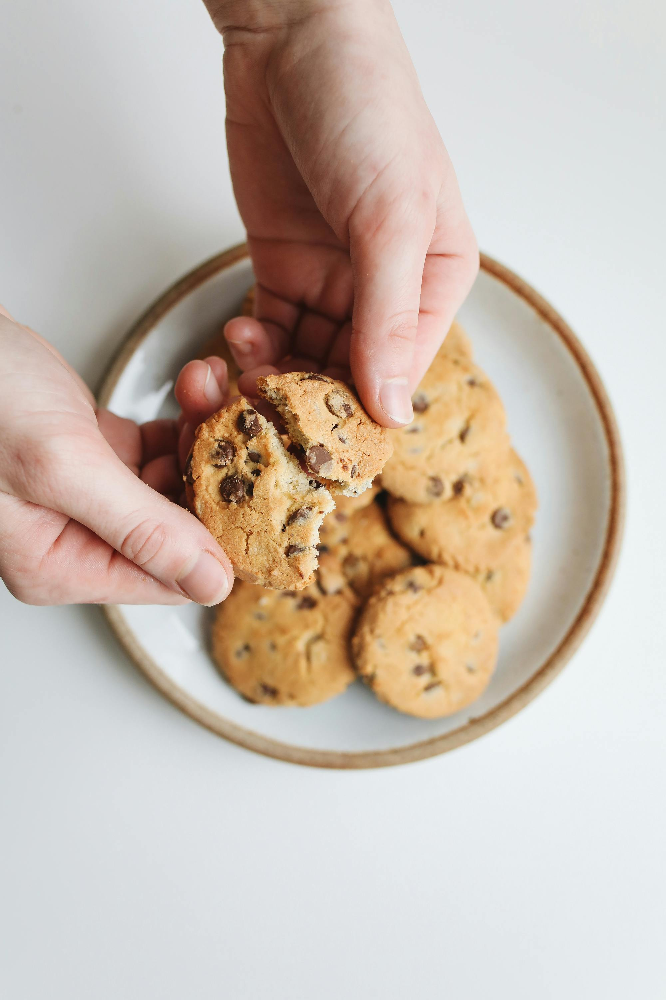

Chocolate Chip Cookies

Video Tutorial
Ingredients
- 1 cup butter, softened
- 1 cup white sugar
- 1 cup packed brown sugar
- 2 eggs
- 2 teaspoons vanilla extract
- 3 cups all-purpose flour
- 1 teaspoon baking soda
- 2 teaspoons hot water
- 1/2 teaspoon salt
- 2 cups semisweet chocolate chips
- 1 cup chopped walnuts (optional)
Directions
- Preheat oven to 350 degrees F (175 degrees C).
-
Cream together the butter, white sugar, and brown sugar until
smooth.
- Beat in the eggs one at a time, then stir in the vanilla.
-
Dissolve baking soda in hot water. Add to batter along with salt.
- Stir in flour, chocolate chips, and nuts.
- Drop by large spoonfuls onto ungreased pans.
-
Bake for about 10 minutes in the preheated oven, or until edges are
nicely browned.